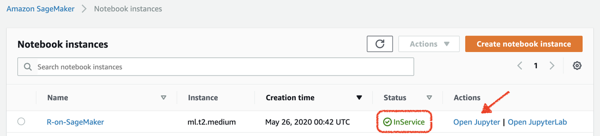
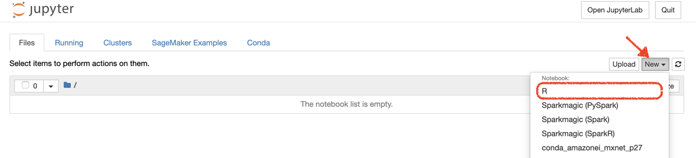
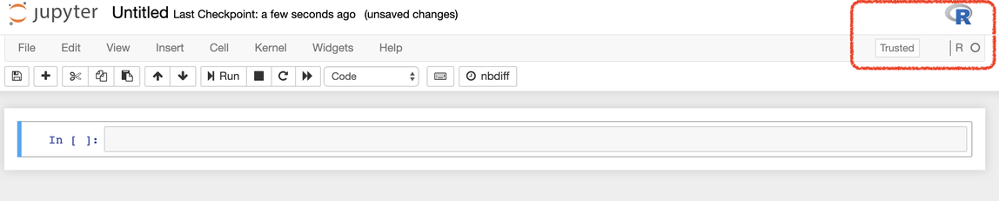
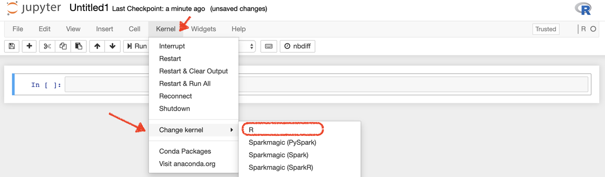

R User Guide to Amazon SageMaker
This document will walk you through ways of leveraging Amazon SageMaker features using R. This guide introduces SageMaker's built-in R kernel, how to get started with R on SageMaker, and finally several example notebooks.
The examples are organized in three levels,
Beginner, Intermediate, and Advanced. They start
from Getting
Started with R on SageMaker
For information on how to bring your own custom R image to Studio, see
Bring your own SageMaker image. For a similar blog article, see
Bringing
your own R environment to Amazon SageMaker Studio
RStudio Support in SageMaker
Amazon SageMaker supports RStudio as a fully-managed integrated development environment (IDE) integrated with Amazon SageMaker Domain. With RStudio integration, you can launch an RStudio environment in the Domain to run your RStudio workflows on SageMaker resources. For more information, see RStudio on Amazon SageMaker.
R Kernel in SageMaker
SageMaker notebook instances support R using a pre-installed R kernel. Also, the R kernel has the reticulate library, an R to Python interface, so you can use the features of SageMaker Python SDK from within an R script.
-
reticulatelibrary
: provides an R interface to the Amazon SageMaker Python SDK . The reticulate package translates between R and Python objects.
Get Started with R in SageMaker
-
Create a Notebook Instance using the t2.medium instance type and default storage size. You can pick a faster instance and more storage if you plan to continue using the instance for more advanced examples, or create a bigger instance later.
-
Wait until the status of the notebook is In Service, and then click Open Jupyter.

-
Create a new notebook with R kernel from the list of available environments.

-
When the new notebook is created, you should see an R logo in the upper right corner of the notebook environment, and also R as the kernel under that logo. This indicates that SageMaker has successfully launched the R kernel for this notebook.

-
Alternatively, when you are in a Jupyter notebook, you can use Kernel menu, and then select R from Change Kernel option.

Example Notebooks
Prerequisites
Getting
Started with R on SageMaker
Beginner Level
SageMaker
Batch Transform using R Kernel
Intermediate Level
Hyperparameter
Optimization for XGBoost in R:
Amazon
SageMaker Processing with R
Advanced Level
Train
and Deploy Your Own R Algorithm in SageMaker: